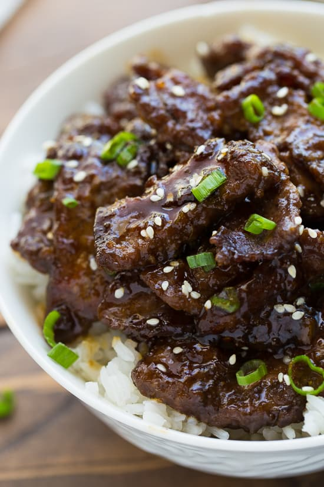

Teriyaki Beef

Beef Teriyaki is a flavorful dish that you can have ready in about 30 minutes! Crispy beef and a quick teriyaki sauce all made in one pan that will rival any take-out dish.
Ingredients
- Flank Steak
- Cooking Oil
- Garlic (Minced)
- Soy Sauce (Tamari)
- Brown Sugar
- Ginger
- Green Onion
- Corn Starch
- Jasmine Rice
- Vegetable of choice
Directions
- Cut the flank steak across the grain of the muscle into bit-sized chunks
- Make the sauce by whisking together tamari, brown sugar, water, cornstarch, and red pepper flakes.
- Cook the beef in a skillet with the sauce until the desired doneness
- Cook the Rice and Vegetables when it is time to serve
- Enjoy!